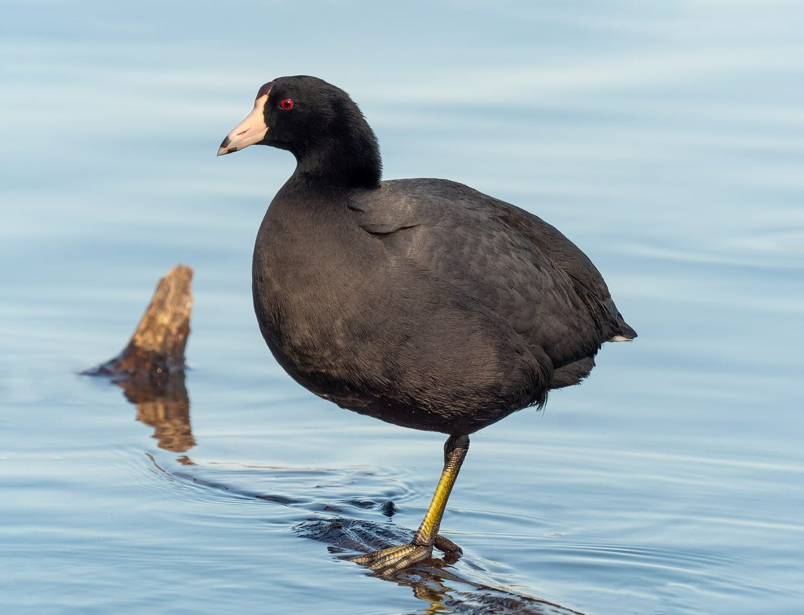

01Foto: Rhododendrites · CC BY-SA 4.0 · fuente
Nada como un pato
Tingua de pico amarillo
Fulica americana
Es un ave negra y gris con el pico y la frente de color blanco amarillento. Aunque parece un pato, no lo es: tiene los dedos con lóbulos que le sirven para nadar y caminar sobre las plantas del agua.
• Dónde vive: Humedales y lagunas con mucha vegetación.
• Qué come: Plantas acuáticas, insectos y caracoles.
Escucha su canto
Audio: NPS y MSU Acoustic Atlas / Jennifer Jerrett · Dominio público · fuente